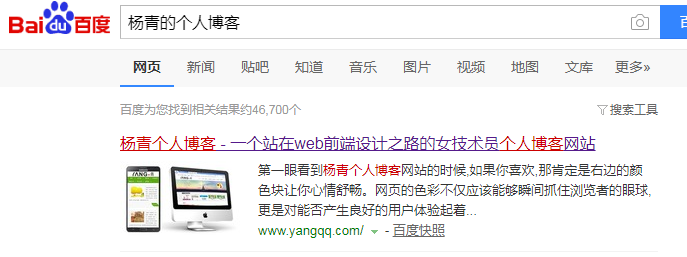
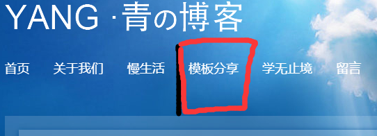
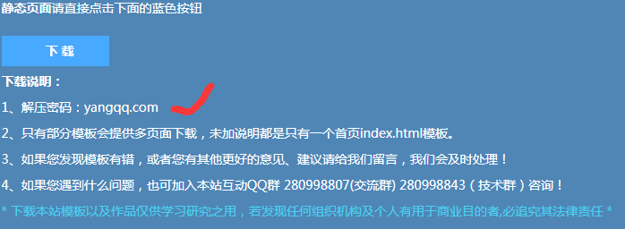
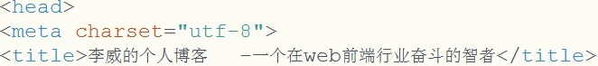
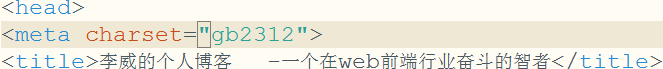
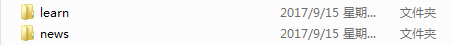

2017-9-16 制作属于自己的web博客记录
首先声明：我的博客模板引用自杨青的个人博客模板。接下来我来介绍一下我制作博客的过程：
第一步：百度-杨青的个人博客，第一个网址即是，然后点击打开！

第二步：点击模板分享模块，里面有好多我们青姐制作的模板，而且都可以免费下载

第三步：浏览一遍，找到你喜欢的模板下载静态页面，注意解压的时候需要密码

因为下载的是静态页面，所以还有很多的地方需要添加改动，比如logo、内容、小图标、留言板...
改动一：logo个性化，这样就是模仿了不叫抄袭，哈哈哈~~~
<div class="logo" data-scroll-reveal="enter right over 1s">
<a href="index.html"><img src="images/logo.png"></a>
</div>
将上面代码中的图片地址换成你自己的logo即可，注意每个页面的logo要保持一致否则会很难看的
改动二：将字符编码改为utf-8,个人习惯用这个字符编码，且对于gb2312编码方式不了解

改过之后字符不会出现乱码现象了，我滴天终于搞好了，打字真累
改动三：我将原有的模板分享模块丢弃了，因为我目前还没有自己制作模板的水平 我想等我以后有自己制作博客模板能力的时候再过来添加吧！有句古话叫做：识时务者为俊杰。再说了，我制作这个博客的目的只是为了记录我的学习生活的，暂时不指望有很多人来借鉴我的文章，做好自己就好。
改动四：添加标题栏小图标，首先选择一个16*16的ico图标，在<head>中添加<link>链接此图片
具体代码如下：
<link rel="icon" href="图片地址" type="image/x-icon"/>
改动五：为了以后更好的更新，我在根目录下建了两个目录learn和news存放生活和学习的博客。当然下面还包括好多子文件夹，为了把生活和学习分的更加细致方便管理

接下来就开始编辑个人博客了，开始畅所欲言，但要条理清晰，祝你好运！
接下来说一说我制作博客过程中的反思和创意。
反思一:留言板的功能还没有实现
反思二:项目经验太少
启发一:用正则表达式写一个能用特殊符号替换HTML标签的功能函数